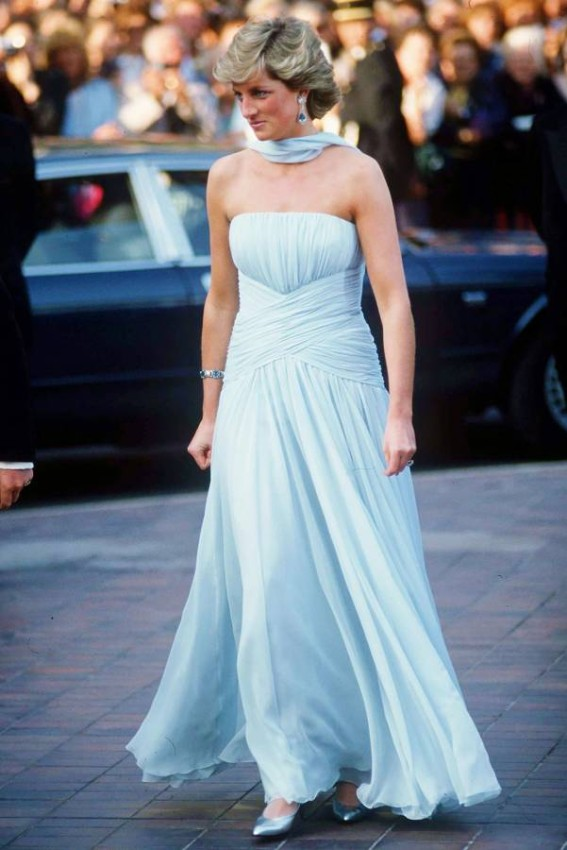
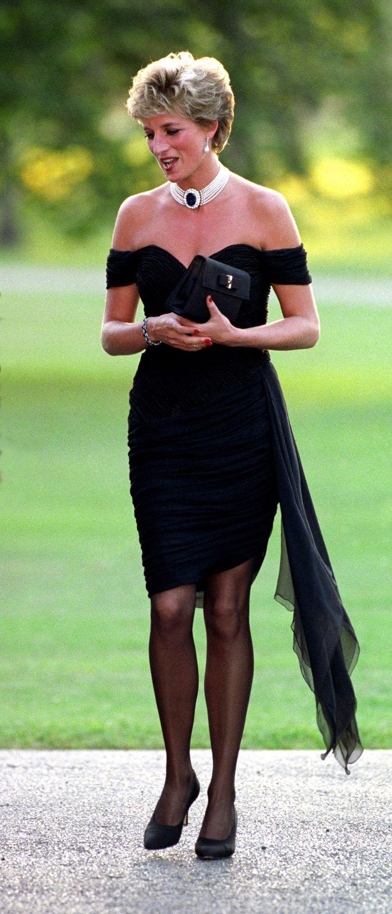

"Princess Diana"
" Her dresses"
Dress |
price |
images |
|---|---|---|
This sky blue gown, with a velvet touch of silk chiffon, and its exquisite flowing design, was signed by one of Diana's favorite fashion designers, Catherine Walker |
132 thousand dollars"132.000$" |
 |
TPrincess Diana's dress, which she appeared in after Prince Charles confessed to her infidelity with Camilla Parker Bowles, which the media called "the revenge dress", was sold at auction in 1997. |
74 thousand dollars"74.000$" |
 |